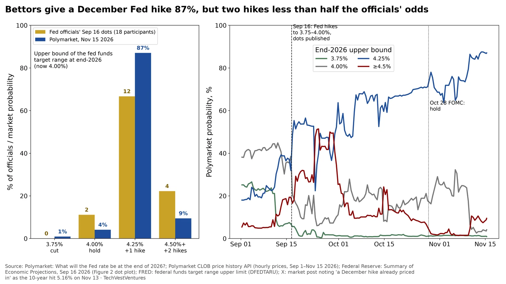

Q8. Fed Path Bets

Left: where Fed officials, in their September 16 2026 projections, saw the upper bound of the federal funds target at the end of 2026 (gold, count of participants) versus Polymarket's current odds (blue). Right: how those odds moved since September 1. The Fed raised rates on September 16 to 3.75–4.00%, its first hike since 2023; 12 of 18 officials pencilled in one more hike by year-end, 4 wanted two, and 2 none. On September 1 bettors gave only 18% to ending the year at 4.25% and 25% to no hike at all; today 4.25% trades at 87%. The market agrees with the median but trims both tails: 9.4% for two or more hikes (versus 22% of officials) and 4.1% for a December hold (versus 11%).
- Current Polymarket prices: 3.75% 0.9%, 4.0% 4.1%, 4.25% 87.1%, ≥ 4.5% 9.4% (lower bins under 1% each).
- Fed SEP medians for 2026 (Sep 16): PCE inflation 3.7%, core PCE 3.4%, unemployment 4.1%, GDP growth 2.3%. October unemployment printed 4.1% (FRED UNRATE).
- The only FOMC meeting left in 2026 is December 8–9; the market resolves on the upper bound after it.
- Dots are rounded midpoints of the target range; we map 4.375 to an upper bound of 4.50%, 4.125 to 4.25% and 3.875 to 4.00%.
Note: Polymarket's 'Yes' prices are probabilities; total across bins sums to about 100%. The September dot plot is two months old; officials will publish new dots at the December meeting. The September Figure 2 shows 18 dots for 2026 (one fewer than a full committee of 19).
Sources: Polymarket: What will the Fed rate be at the end of 2026? Polymarket CLOB price history API (hourly prices, Sep 1–Nov 15 2026) Federal Reserve: Summary of Economic Projections, Sep 16 2026 (Figure 2 dot plot) FRED: federal funds target range upper limit (DFEDTARU) X: market post noting 'a December hike already priced in' as the 10-year hit 5.16% on Nov 13